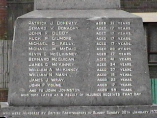

Patrick 'Pat' Doherty | (31) |
| Gerald Donaghy | (17) |
John 'Jack' Duddy | (17) |
Hugh Gilmore | (17) |
Michael Kelly | (17) |
Michael McDaid | (20) |
Kevin McElhinney | (17) |
Bernard 'Barney' McGuigan | (41) |
Gerald McKinney | (35) |
William McKinney | (26) |
William Nash | (19) |
James Wray | (22) |
John Young | (17) |
John Johnson (59) was shot twice and died on 16 June 1972. His family is convinced that he died prematurely and that his death was due to the injuries received and trauma he underwent on 'Bloody Sunday'.
Michael Bradley | (22) | |
Michael Bridge | (25) | |
Alana Burke | (18) | |
Patrick Campbell | (53) | |
Margaret 'Peggy' Deery | (37) | (the only woman shot and injured on 'Bloody Sunday') |
Damien Donaghy | (15) | |
Joseph 'Joe' Friel | (20) | |
Daniel Gillespie | (31) | |
John Johnson | (59) | |
Joseph Mahon | (16) | |
Patrick McDaid | (24) | |
Daniel McGowan | (37) | |
Alexander 'Alex' Nash | (52) | |
Patrick 'Paddy' O'Donnell | (41) | |
Michael Quinn | (17) | |